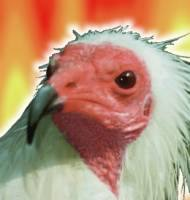

FOTONote
Argo è un fiero avvoltoio infernale da caccia, recapitato a sorpresa a bordo della USS Afrodite come regalo personale da parte della "Grande Madre" degli Inferi per fornire una scorta di protezione al Capitano Giuseppe "Beppe" Alighieri.
Fin dal suo arrivo ha scatenato la feroce gelosia di Geppo, lo stregatto di bordo. La loro convivenza è costellata da liti furibonde e inseguimenti rocamboleschi tra i corridoi e sul Ponte di Comando e la Sala Motori della Afrodite. Memorabile quella volta in cui, alle ore 16:00, al cambio turno, una delle loro zuffe finì per rovesciare la tazza di latte caldo sull'uniforme del Capitano, costringendolo a rimanere in canottiera (al cospetto del Capitano Picard dell'Enterprise D).
Ha eletto la Sala Macchine come suo trespolo e rifugio prediletto, costruendosi il nido direttamente sopra uno dei moduli per la velocità a curvatura per scaldarsi. È l'incubo ricorrente dell'Ingegnere Capo Jidtzia Ta Nutri a causa delle continue incursioni aeree e delle piogge di escrementi sui circuiti delicati dell'astronave, che hanno richiesto più volte la riparazione dei sensori interni e vere e proprie battute di caccia all'avvoltoio armati di scope ed essenze alla lavanda della signora Scramiglio.
Tra le sue altre memorabili imprese a bordo si annoverano il bombardamento a base di barattoli di Nutella sui novelli sposi durante i festeggiamenti nei corridoi; le fughe acrobatiche durante i maldestri tentativi di teletrasporto di emergenza del Guardiamarina Braxx; l'abitudine di volteggiare in cerchio sopra la testa degli ufficiali di Plancia per amplificarne il nervosismo nei momenti di crisi.